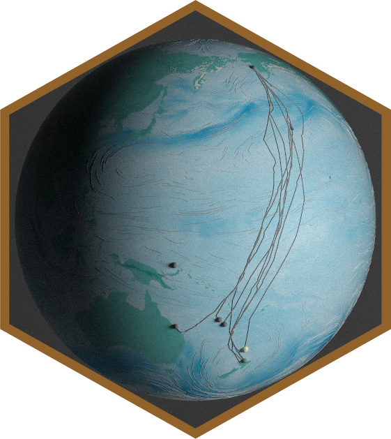

I recently submitted a simulation of migrating Bar-tailed godwits (Limosa lapponica) to a vizualisation competition initiated by the BES Movement Ecology SIG. The animation shows the epic migration of Bar-tailed godwits from New Zealand to Alaska via the Yellow Sea during northward migration, and the amazing non-stop flight from Alaska to New Zealand (or in some cases via Australia or the southern Pacific Islands) during southward migration.In addition, the animation puts the individual migration tracks in relation to wind (from ECWMF ERA5 dataset) and snow cover (NOAA IMS Northern Hemisphere Daily Snow Cover dataset). On the globe, you see the wind speed over the ocean (median wind speed across 10m, 750p, 800p and 925p) and simulated particle tracks drifting with the wind. The individials circles change size and color according to the wind support during movements (no movement indicated with grey circles). The green inland color shows the topography (based on NOAA ETOPO2v2). On the right panel, you see the distribution of wind support across all individuals separated by the major fligth bouts (legs).
Thanks to Jesse Conklin and Phil Battley for sharing the tracks and for valuable input and discussion sourrounding the migration of this species.
In this tutorial, I will describe the main steps and processes to project tracks on the 3D surface of the earth, include wind fields and render the scene using rayshader.
library(rayshader)